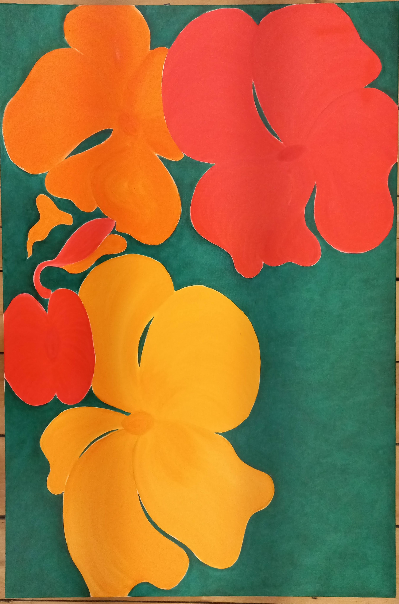

Visual Art
Art
A dedicated space for abstract work, experiments, and finished pieces.
Organise this page by series, medium, or year. Each artwork can later link to a dedicated project page if needed.
Selected works

001-2
Abstract nature study.

Series I
Replace with your real title, year, and medium.

Series II
Replace with your real title, year, and medium.

Series III
Replace with your real title, year, and medium.
Work in Progress
Optional space for evolving studio pieces.
Archive
Use this slot for older or retrospective work.